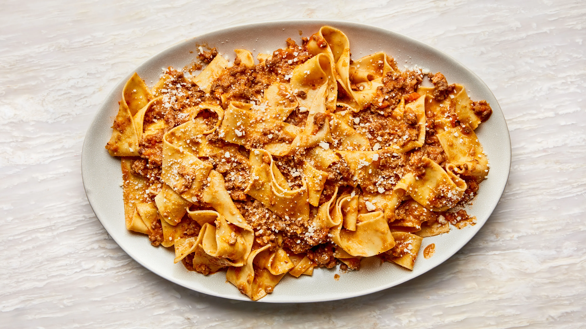

Bolognese

Description
It does not take a lot of ingredients (or a lot of money) to make a classic Bolognese recipe. What it does take, though, is patience for the sauce to achieve the ideal authentic texture. You are going to go low and slow—it will take around 3 hours, but most of that cook time is hands-off.
Ingredients
- bolognese sauce
- Pasta
- Salted Boiled Water
Steps
- pour sauce into pan and raise the heat.
- boil some water and put the pasta inside, and cook till el dente, it should say on the box how long that takes.
- Mix the pasta and sauce together, and add some pasta water.
- Lastly, plate the pasta with some flair.